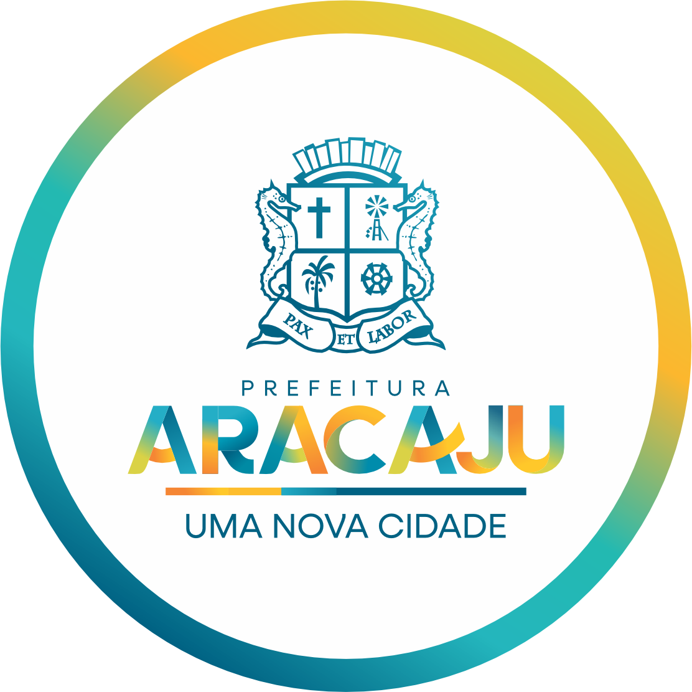

Assistente Virtual
Self-hosted · Multi-secretaria · Baseado nos documentos oficiais
O desafio do atendimento ao cidadão
Perguntas repetitivas
As mesmas dúvidas (impostos, direitos, serviços) chegam o tempo todo às secretarias.
Equipes sobrecarregadas
Servidores gastam horas respondendo manualmente o que já está na legislação.
Fora do horário
O cidadão precisa de resposta a qualquer hora — não só no expediente.
Informação dispersa
Leis e procedimentos ficam espalhados e difíceis de encontrar.
Um assistente que responde com base nos documentos oficiais
Honestidade em primeiro lugar: quando a informação não está na base, o assistente diz que não sabe e orienta procurar a secretaria — nunca inventa.
Disponível 24/7
Responde em linguagem natural, a qualquer hora, em segundos.
100% self-hosted
Roda na infraestrutura da Prefeitura, sem enviar dados a terceiros (LGPD).
Tudo na infraestrutura da Prefeitura
Privacidade por design: nenhum dado do cidadão sai para serviços externos. Modelos de IA e documentos ficam 100% nos servidores da Prefeitura (LGPD).
Cidadão
Interface de chat (web / WhatsApp)
Gerenciamento
AnythingLLM + Microserviço + Cache semântico
Motor de IA
Ollama (IA local, CPU)
qwen2.5:7b + bge-m3
Uma plataforma,
várias secretarias
Cada secretaria tem sua própria base, cache e fila de perguntas. Adicionar uma nova é simples e rápido.
15× mais rápido quando a pergunta se repete — e a maioria das dúvidas de fato se repete.
As secretarias no controle do conhecimento
Sem editar código: o próprio time da secretaria alimenta e melhora o assistente. Segurança e conformidade com a LGPD em cada etapa.
Cidadão pergunta
Algo que ainda não está na base.
Entra na fila
A pergunta sem resposta é registrada no painel.
Secretaria responde
No painel, com a resposta oficial.
Vira conhecimento
O assistente passa a responder na hora.
Dados na Prefeitura
Modelos e documentos rodam nos servidores próprios; nada vai para a nuvem de terceiros.
Recusa em vez de inventar
O assistente só responde o que está nos documentos oficiais. Limite de requisições por usuário evita sobrecarga.
Para onde vamos
Um atendimento melhor para o cidadão de Aracaju.
1. Mais secretarias
Ampliar para novas áreas da Prefeitura.
2. Atualização automática
Cache se renova sozinho (via n8n).
3. WhatsApp oficial
Canal onde o cidadão já está.
4. Domínio e HTTPS
Endereço próprio e conexão segura.

24/7 · Self-hosted (LGPD) · Escalável · Sem custo por pergunta
Prefeitura de Aracaju